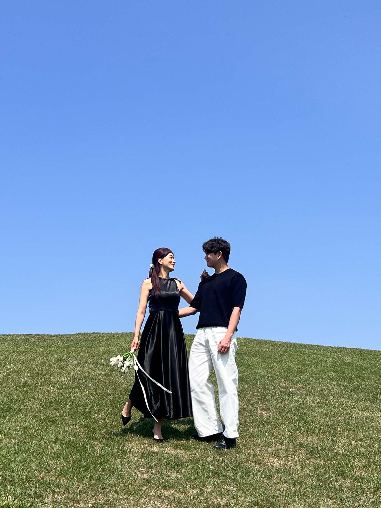

겨울을 지나 봄이 오듯
익숙한 듯 새로운 삶을 살아가려 합니다.
서로 다른 두 사람이 남은 삶을 함께하며,
심해 같은 슬픔과 우주 같은 기쁨을 나누고
비로소 아름다운 꽃을 피워내고자 합니다.
저희의 햇살이 되어주시고, 봄비가 되어주세요.
신랑 양성희
故양철진・서정자의 차남
신부 김예지
故김종식・채동순의 차녀

테라리움서울
서울특별시 노원구 노원로 247 서울온천 7~8층
예식장 주차 공간이 협소하여 만차일 경우가 많습니다.
가급적 대중교통 이용을 권장해 드리며, 자가용 이용 시
안내된 주변 주차장을 이용해 주시면 더욱 편리합니다.